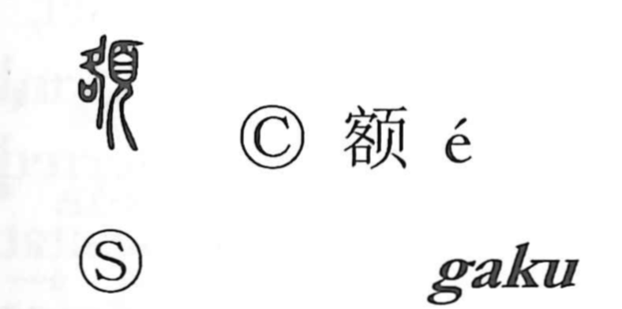

額

Kun: hitai | On: gaku
forehead ・ amount ・ framed plaque ・ picture frame
Explanation
額 combines 頁, the head, with 客 as its sound element. An older form, 頟, uses 各 in that role. The character first names the forehead, the prominent upper front of the face.
A tablet or sign placed high at the front of a building occupies a similar conspicuous position. 額 therefore also names the displayed plaque and, later, a framed tablet or picture.
Another use concerns a fixed amount or limit: the quantity assigned or established for something. This is the sense in words for a monetary amount or a quota.